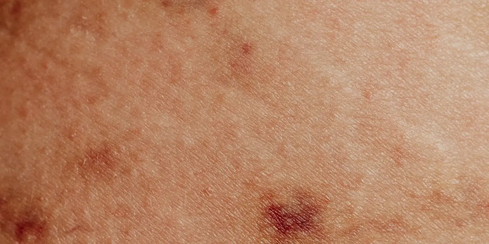

Tipos de lipedema según la zona afectada: del I al V
Dos personas con lipedema pueden verse muy distinto: una lo tiene solo en caderas y muslos, otra también en los brazos. Los tipos de lipedema explican esa diferencia: no miden qué tan avanzada está la enfermedad, sino en qué parte del cuerpo se acumula la grasa, de la zona I a la V.

¿En algún momento te hablaron de «tipo III» o «tipo V» de lipedema (en una consulta, en un grupo de pacientes o en otro artículo) y te quedaste sin entender qué significa? Es normal. Los tipos de lipedema no son etapas ni grados de gravedad: son la zona del cuerpo donde se acumula la grasa. Y ni en Medellín ni en el resto del mundo hay todavía una sola clasificación aceptada por todos los especialistas.
En 2018, varias sociedades médicas españolas (entre ellas la Asociación Española de Linfedema y Lipedema y el Capítulo de Flebología y Linfología de la Sociedad Española de Angiología y Cirugía Vascular) publicaron un documento de consenso sobre el tema. Y admiten algo que no siempre se dice tan claro: ninguna de las clasificaciones disponibles está validada del todo, ni se correlaciona de forma clara con la gravedad real de cada caso. Aun con esa reserva, la que más se usa en la práctica agrupa el lipedema en cinco tipos según la zona del cuerpo.
Vamos tipo por tipo.
Los tipos de lipedema, de la I a la V
Esta es la clasificación de Schingale, la más citada en artículos y guías para pacientes. Describe cinco tipos según dónde se nota más el aumento de grasa, siempre de forma simétrica en ambos lados del cuerpo.
Tipo I: caderas y muslos
El tejido graso aumenta en los glúteos, las caderas y la parte alta de los muslos, mientras el tronco superior se mantiene proporcionado. Es la distribución que más se confunde con sobrepeso común o con la grasa típica del cuerpo femenino. Lo explicamos con más detalle en lipedema en cadera y glúteos.
Tipo II: hasta las rodillas
La grasa se extiende desde los muslos hacia las rodillas, sobre todo en la cara interna. Empieza a notarse el contraste entre la parte superior del cuerpo y las piernas, aunque todavía no llega al tobillo.
Tipo III: de la cadera al tobillo
Aquí el aumento de volumen cubre toda la pierna, de la cadera al tobillo, respetando el pie (el llamado signo del anillo o del surco adiposo, donde la piel se marca justo encima del tobillo). Es el patrón que el grupo de consenso de 2018 considera el más característico del lipedema, frente a otros tipos que podrían confundirse con otra cosa.
Tipo IV: también en los brazos
Se suma a cualquiera de los anteriores el compromiso de los brazos, desde el hombro hasta la muñeca, con una distribución igualmente simétrica. En este tipo hay menos consenso que en los anteriores: el mismo documento de 2018 que citamos arriba señala que todavía no hay evidencia suficiente para confirmar el lipedema de brazos cuando aparece solo, sin sobrepeso ni otra alteración del tejido graso de base, así que conviene que sea un especialista quien lo valore caso por caso. Si lo que notas es justo esto, tienes una guía completa en lipedema en los brazos: no solo las piernas.
Tipo V: solo en la pantorrilla
Es el menos frecuente y el que menos coinciden las fuentes en describir. En general, la grasa se concentra entre la rodilla y el tobillo, respetando el pie, sin comprometer el muslo. También hay diferencias entre clasificaciones: la de Schingale usa el «tipo V» para la combinación de lipedema con linfedema (lipolinfedema), mientras que otras, como la de Meier-Vollrath, reservan ese número para esta forma aislada en la pantorrilla. Por eso vale más que sea tu médico quien le ponga nombre a tu caso, y no una tabla.
Si tu caso no calza exactamente en ninguna descripción, no es un error tuyo: es, literalmente, lo que dicen los documentos técnicos sobre este tipo en particular.
| Tipo | Zona principal | Dato clave |
|---|---|---|
| Tipo I | Glúteos y caderas | Se confunde con sobrepeso común. |
| Tipo II | Muslos hasta rodillas | Más marcado en la cara interna. |
| Tipo III | Cadera a tobillo | El más reconocido como lipedema típico. |
| Tipo IV | Brazos (sumado a otro tipo) | De hombro a muñeca, simétrico; evidencia científica más limitada. |
| Tipo V | Pantorrilla (rodilla a tobillo) | El menos frecuente y el menos descrito. |
¿Esto es lo mismo que las etapas del lipedema?
No. El tipo describe en qué parte del cuerpo está la grasa; la etapa describe cómo se ve y se siente la piel en esa zona, de una superficie lisa con pequeños nódulos hasta un tejido firme con pliegues marcados. Puedes tener un tipo III en una etapa temprana, con poco volumen pero ya con dolor, o un tipo I en una etapa más avanzada, con la piel más comprometida. Si lo que buscas es cómo evoluciona tu lipedema con el tiempo, y no en qué zona se nota más, el artículo que te sirve es etapas del lipedema: cómo evoluciona.
Qué cambia esto en tu valoración en Medellín
En el consultorio de El Poblado no se decide el manejo mirando solo en qué tipo encaja tu lipedema. Se revisa junto con la etapa del tejido, el dolor, si hay un componente venoso o linfático asociado (a veces con apoyo de un eco doppler) y cómo te está afectando el día a día.
En Seravena creemos que ponerle nombre a la zona ayuda a explicarte lo que ves en el espejo, pero el tratamiento nunca sale solo de esa etiqueta: depende de tu caso completo, no solo de si es tipo I, III o IV.
Es común, además, que una persona tenga rasgos de más de un tipo a la vez: por ejemplo, afectación de cadera a tobillo y también en los brazos. Esa combinación no significa que el diagnóstico esté mal hecho; varias de las clasificaciones médicas la contemplan como algo esperable. Puedes conocer cómo evaluamos el lipedema en Medellín en nuestra página de manejo de lipedema.
Antes de tu próxima cita, o antes de agendar la primera, anota en el celular en qué zonas notas el aumento de grasa (caderas, muslos, rodillas, pantorrillas, brazos) y si es igual en ambos lados del cuerpo. Esa nota, por simple que parezca, le ahorra tiempo al profesional para ubicar tu caso y te deja más tiempo en la consulta para hablar de lo que realmente te preocupa. Si quieres que alguien lo revise contigo, puedes agendar una valoración cuando quieras.
Preguntas frecuentes
¿Cuál es el tipo de lipedema más común?
El tipo III, que va de la cadera al tobillo respetando el pie, es el que los documentos de consenso médico señalan como el patrón más característico del lipedema. Los tipos I y II, limitados a caderas o rodillas, a veces se confunden con una distribución de grasa típica sin ser necesariamente lipedema.
¿Se pueden tener varios tipos de lipedema a la vez?
Sí. Es frecuente que una persona tenga, por ejemplo, afectación de cadera a tobillo (tipo III) y también en los brazos (tipo IV). La combinación de tipos no es un error en el diagnóstico: distintas clasificaciones médicas la contemplan como algo esperable.
¿El tipo de lipedema que tengo define el tratamiento?
No por sí solo. El manejo se decide junto con la etapa del tejido, el dolor, si hay un componente venoso o linfático asociado y cómo te afecta en el día a día, no solo por la zona donde se acumula la grasa.
¿Qué diferencia hay entre los tipos y las etapas del lipedema?
El tipo indica en qué parte del cuerpo está la grasa, de la I a la V. La etapa indica cómo se ve y se siente la piel en esa zona, de una superficie lisa con pequeños nódulos hasta un tejido firme con pliegues marcados. Son dos clasificaciones distintas que se usan juntas.